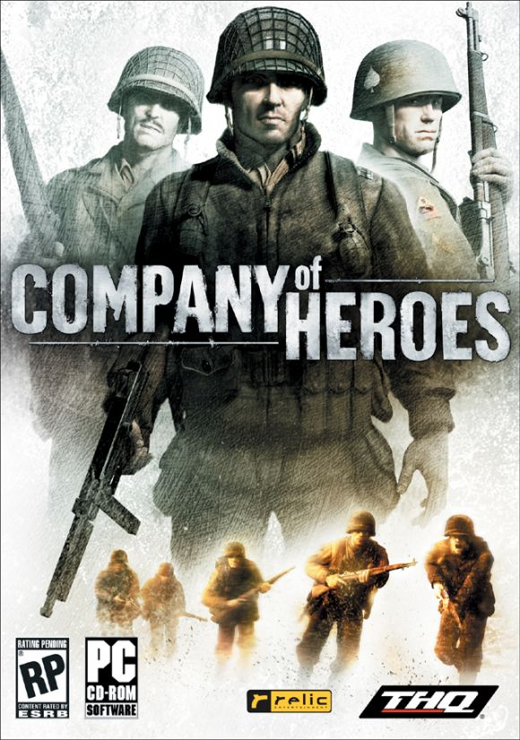
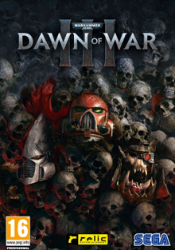
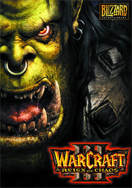
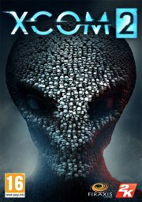

Age of Empires II: The Age of Kings (abreviado AOE2 o AOK y en su versión remasterizada AOE HD) es un videojuego de estrategia en tiempo real para computadoras personales desarrollado en un principio por Ensemble Studios y más tarde por Skybox Labs (su remasterizador), y distribuido por Microsoft Games para los sistemas operativos Windows y Mac OS, y Konami para PlayStation 2.23 Fue lanzado a mediados de 1999 y es el segundo título que compone la serie Age of Empires.4
El juego está ambientado en la Edad Media, justo tras la caída del Imperio romano y la toma de Roma por los bárbaros (más concretamente los hérulos). El jugador puede optar entre 13 civilizaciones que existieron en aquel período histórico, y debe encaminarlas para formar un vasto imperio y vencer a sus enemigos. El juego ofrece la posibilidad de jugar contra el ordenador o contra otras personas en línea, con un máximo de 8 jugadores por partida.5
Categoria estrategia

Company of Heroes
Descripcion
Company of Heroes, también llamado CoH, es un videojuego de estrategia en tiempo real. Situado en la Segunda Guerra Mundial, el juego cubre el enfrentamiento entre las tropas alemanas y estadounidenses desde el Día D hasta el final de la guerra. Por su innovador estilo de juego, uso de tácticas esenciales para obtener la victoria e impresionantes gráficos es considerado uno de los mejores juegos de ETR (Estrategia en Tiempo Real) de la historia. Su sistema multijugador influye fuertemente en el juego y asegura muchas más horas de juego, tanto es así, que varios años después Company of Heroes sigue teniendo una buena cantidad de jugadores en línea cada día. El juego dispone de unidades de tierra, aire y artillería exterior (aunque las de aire no son controladas directamente por el jugador), dispone de mucha diversidad de unidades que van desde carros de combate, armamento pesado, cañones anti-tanque, artillería autopropulsada, artillería a pie, morteros, semiorugas, vehículos de recuperación y de apoyo, paracaidístas, comandos, y un largo etcétera. Ha sido desarrollado para Microsoft Windows por Relic Entertainment.
Categoria estrategia

Dawn of war
Descripcion
Warhammer 40,000: Dawn of War III (Abreviado como Dawn of War III) es un videojuego, perteneciente al género de estrategia en tiempo real, el cual fue producido por la empresa desarrolladora Relic Entertainment y Sega en asociación con Games Workshop, los creadores del universo Warhammer 40.000.
Dawn of War III es el tercer título numérico de la saga principal Dawn of War, luego de Dawn of War I y Dawn of War II, y el primer nuevo lanzamiento de la serie principal desde Dawn of War II: Retribution en el año 2011.
Categoria estrategia

Warcraft 3
Descripcion
Warcraft III: Reign of Chaos es un videojuego de estrategia en tiempo real creado por Blizzard Entertainment y es la tercera parte de la serie Warcraft. Además de continuar la historia del mundo épico medieval de Warcraft se distingue de sus predecesores por incorporar dos importantes cambios: el paso a los gráficos 3D y la aparición de dos nuevas razas.1
El juego consiste básicamente en administrar los recursos disponibles (oro, madera y alimento) para producir unidades militares y desarrollar un ejército que dirigir en contra de los oponentes hasta destruir todos sus edificios. El juego provee varias estrategias de ataque o defensa, y se ejecutan las tácticas de combate y producción a partir de cuatro diferentes tipos de civilizaciones, llamadas «razas», que protagonizan el juego: humanos, orcos, elfos nocturnos y muertos vivientes. Cada una de estas razas es comandada a su vez por tres clases de héroes que encabezan y apoyan significativamente las batallas ante sus adversarios. Uno de los elementos innovadores del juego son estas unidades tipo héroe, capaces de crecer considerablemente en poder y tomar ítems distribuidos en los escenarios.
El CD del juego también se incluye un editor de mapas que permite crear nuevos mapas, unidades, estilos de juego, etc. La herramienta permite la creación de mapas ilimitados permitiendo a los jugadores modificar cada aspecto manipulado por los propios diseñadores de Warcraft III.
Categoria estrategia

Xcom2
Descripcion
XCOM 2 es un videojuego de tácticas por turnos desarrollado por Firaxis Games y publicado por 2K Games para Microsoft Windows , OS X y Linux en febrero de 2016, y para PlayStation 4 y Xbox One en septiembre de 2016. El juego es la secuela de 2012 reinicio de la serie, XCOM: Enemy Unknown . 20 años después de los eventos de Enemy Unknown , sigue la continuidad de que XCOM, una organización militar que intenta combatir unainvasión alienígena , ha perdido la guerra y ahora es una fuerza de resistencia contra su ocupación de la Tierra. La expansiónXCOM 2: War of the Chosen fue lanzado en 2017.